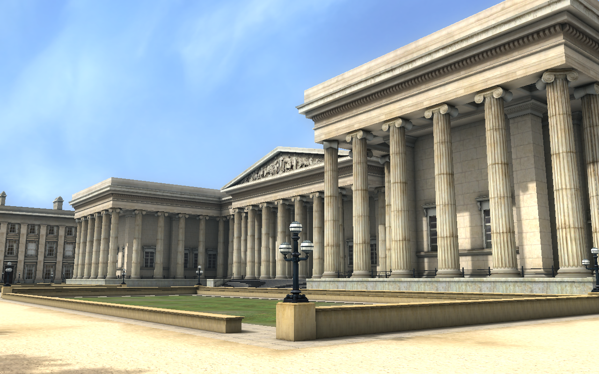
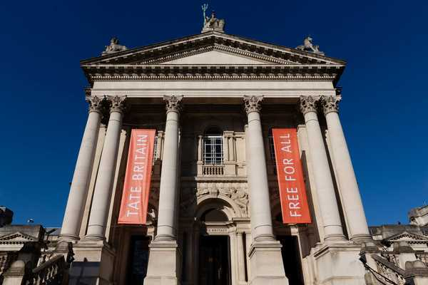
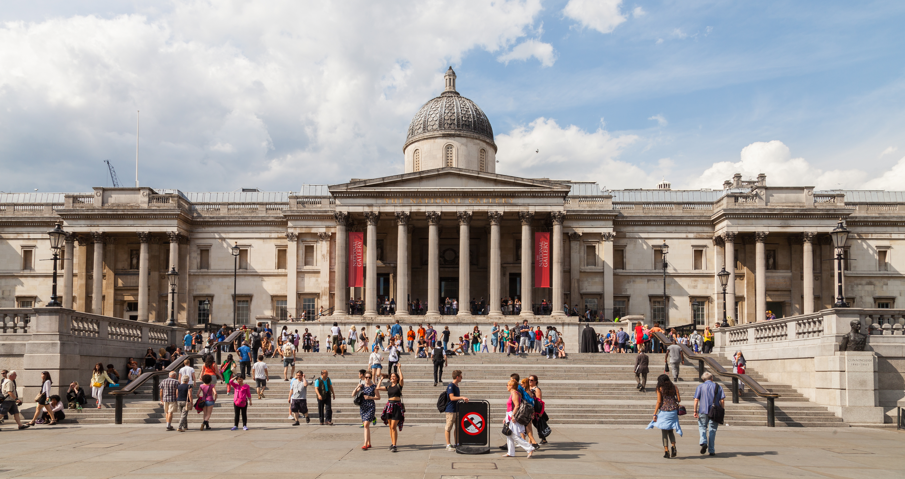
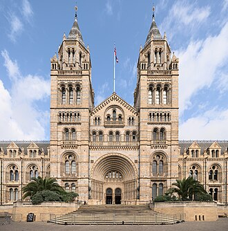

Una de las grandes atracciones de Londres son sus innumerables museos. Los más importante museos fueron craeados para educaión y el entreenimiento del pueblo y por ese motivo siguen siendo gratuitos
The British Museum - Tate Britain - The National Gallery - Natural History Museum
El Museo Britanico se fundó en 1735 y alberga antigúedades prodentes de Egipto, Roma, Grecia, Oriente Próximo y Asia. El edificio se empezó a constrir en 1824, fue diseñado por RObero Smirke y hasta 1997 también era la sede de la Biblioteca Brtánica. Seguramente sólo haya dos museos en el mundo comparaable en la variedad y riqueza de sus colecciones: el Louvre de País y el Mtroolitan de Nueva York

En 1897 se abrió al publico, al sur de Westminister, la Galeria Noacional de Arte Brtianico, gracias al dinero aportado por Henry Tate, magnate del azúcar y coleccionista. En 1932 el museo pasó a llamarse Tate Gaellery. En 2000 el muselo inaguro la Tate Modern,una nueva sede situada frente a la Catedral de San Pablo. La Tate Gallery pasó a llamarse Tate Britain y alberga importantes colecciones como la dedicadas a William Turner o a Henry Moore

La National Gallery alberga la más importatnte coleccion inglesa de pintura de los siglos al XV al XIX. Fue creada en 1824 a partir de donaciones y compras a coleccioneistas particulares y desde 1838 tiene su sede en Trafalga Square. Esta plaza está dedicada a una de las victorias mas importantes de la Armada inglesa, la batalla de Trafalgar de 1805, frente a las flotas francesa y español. En el centro de la plaza se encuentra la columna de Nelson, que dirigio la flota inglesa en esa batallay fallecio en ella

En el siglo XVII el Museo Britianico albergaba colecciones de animales y plantas, pero en desastrosas condiciones. Para resolver la situacion, 1881 se abrio la sede actual del Museo de Historial Natural, un magnifico edificio de ladrillo de terracota, caracteristico de la epoca victoriana. En sus inmediaciones se encuentran tambien el museo de la Ciencia, el museo de Arte y Diseño, varias reales academias de arte ciencia y la famosa sala de conciertos Royal Albert Hall.